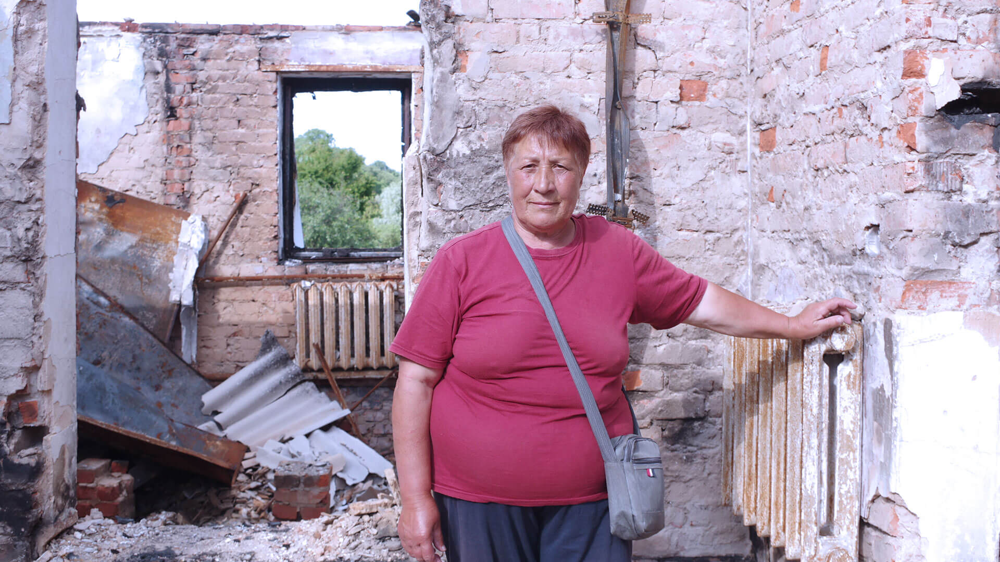
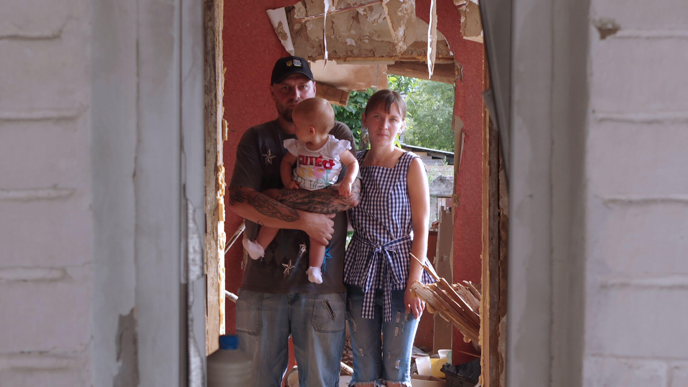
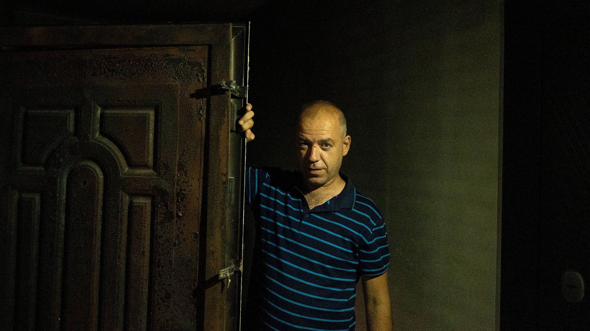
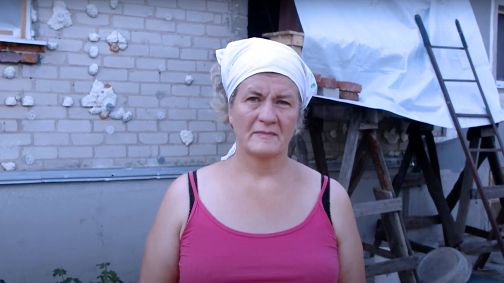

BLOG
What would you take? Meet the people behind our Ukraine film
by Nicky Stephens, ShelterBox Digital Marketing & Innovation Manager 16/11/2022
Every day behind the headlines, people caught up in war face impossible choices. We’ve been working with people from Ukraine on a film about home, in support of our appeal to help people living in damaged homes stay warm in Ukraine this winter.
Introduced by long-term ShelterBox supporter and friend, Stephen Fry, the film is based on an exclusive poem by Serhiy Zhadanwhich asks a simple question with a tangle of answers. What would you take?
How can you carry a sense of home, when your familiar four walls are shattered?
ShelterBox has worked with thousands of people – both in Ukraine and neighbouring countries – who have faced this impossible question.
This film is for them, and the 100 million people who are forced from their homes by disaster and conflict every year.
Behind the scenes…
The people
The film features images and footage from our work in Ukraine, showing the brutal impact of war and how some of the people supported by ShelterBox have been affected.
Meet four of the people your support has helped.
NADIYA

‘My husband and I barely got out, thank God we survived.’ Nadiya’s home burnt down and all her possessions were destroyed when they were hit by shelling. They now live with strangers. ShelterBox aid, like mattresses, blankets and hygiene kits, offer them some comfort.
IRINA

Irina, her husband and their 11 month old daughter stand in the rubble of their home. The family fled from bombing just before their home was destroyed. They’re using a ShelterBox tarpaulin and rope on the roof to protect what’s left of their home until they are able to come back and repair it.
DYMTRO

The top floor and roof of Dymtro’s apartment block were badly damaged after a missile attack in March. ShelterBox and our partner ReliefAid are the only organisations that have helped the community here. They have worked together, using ShelterBox aid to clear the debris, repair windows and the roof.
ANGELA

‘I want peace in our land, I want there to be no war, because I don’t want anyone to endure this’. Angela’s home was hit by a mortar. It took her family a week to sort out the rubble, debris and broken items, but with ShelterBox’s support she has been able to cover the roof and seal the windows.
Meet the ‘rockstar poet’, the British-Ukrainian actor, and the translator from Cornwall who’ve all worked on the film.
The poet
Often described as one of the most important voices in contemporary Ukrainian literature, award-winning writer and musician Serhiy Zhadan has remained in his home city of Kharkiv throughout the war, organising humanitarian aid.
Serhiy has written this untitled poem about home and the Ukraine’s experience of war, exclusively for the ShelterBox’s winter appeal.
Known as ‘the rockstar poet’, he’s played with his band for hospital patients and people sheltering in bunkers. In an interview with German broadcaster DW, he explained how this led him to realise ‘that literature, theatre, music [must] take place, because that creates a connection with normal life.
‘Literature can be a very accurate and honest chronicle; an instrument Ukraine uses to try and make itself understood.’
The actor
Ivantiy Novak is a Ukrainian-British writer, actor, director and poet.
Since the outbreak of the conflict he’s been raising funds, packing supplies – and sharing the culture and art of Ukraine with the world. Having read Ukrainian poetry and prose for the BBC, Ivantiy has voiced the poem for our film. He also worked on the translation with writer and translator, Charlotte Hobson.
Ivantiy gave us an insight into Serhiy’s style and the challenge of all poetry translation – ‘to contain reality in tightly wrapped-up lines.’
He shared his admiration for Serhiy’s ‘delicately precise’ words that ‘make sure it’s about them, his people, rather than himself. They convey the stark nakedness of leaving home in simple direct language, offering imagery that is unadulterated by any linguistic gymnastics.’
Ivantiy is the founding director of EMBERR Magazine.
The translator
Award-winning author Charlotte Hobson lives in Cornwall and speaks Russian and Ukrainian.
She remembers first visiting Ukraine in the 1990s and being ‘blown away by the beauty of the landscape and the easy generosity of the people we met.’
A couple of weeks after war broke out, Charlotte headed to the Ukrainian border to help with translation for refugees as they crossed into Poland. Since returning home, she’s been welcoming Ukrainian families to Cornwall and translating for them.
Now, Charlotte has given her time to help translate Serhiy’s poem, in between fundraising projects to feed and house Ukrainian refugees, and support three orphanages.
Follow Charlotte on Twitter: @ardevor
Temperatures can reach -15 degrees in Ukraine in winter. Please share this film and consider donating to our winter appeal – to help support people in Ukrainian stay warm this winter.
The poem
People, like snails, wait for the evening
Sleeping so soundly, so deeply in stations
Women who left clean bedsheets back home
Children who cling to their mother’s hand.
What will you take, little snail, from your burning home?
First of all, faith that you will return.
Remember the way the furniture stood;
Hide the keys in your pocket like a dried flower.
This is your road – walked by the voiceless.
Overnight stays between silence and rain.
Be brave, snails, know your worth on this journey.
You’re denied a home – never a heart.
SOURCE: SHELTERBOX